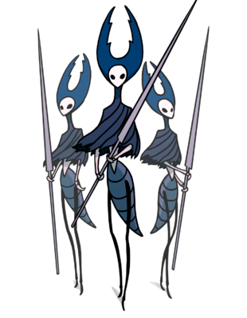

|
A jogabilidade de Hollow Knight tem duas faces
que se complementam. Tem a parte da aventura inspirada pelo gênero "metroidvania" e a parte do combate inspirada em Dark Souls.
O mapa de Hollow Knight é imenso e muitas vezes o jogador vai ter que voltar em uma área que ele já passou porque ele não conseguiu
explorar completamente depois de conseguir a habilidade que o permite que explore todo o local e achar itens novos.
Dentro da comunidade gamer, os jogadores adotaram um nome para jogos inspirados na série Dark Souls que é Souls Like.
Hollow Knight pode ser considerado um desses jogos, pois tem a clara inspiração do combate de Dark Souls. No começo o Knight
não possui muita energia, apenas cinco máscaras, unidade que conta as vidas do personagem, mas essa quantidade pode ser aumentada ao longo do jogo.
Cada inimigo tem uma boa chance de matar o jogador se pegá-lo desprevenido ou em uma sequência de erros.
Quando há um tempo para descansar há a chance de recuperar sua energia com "Foco", habilidade que gasta o recipiente de energia usado também
para golpes especiais. Este recipiente se preenche sempre que o jogador atinge um golpe em um inimigo. Quando o Knight morre ele deixa uma espécie
de fantasma no lugar em que morreu. O seu recipiente de energia vai ficar incompleto e ele vai perder todo o seu dinheiro se ele não voltar ao
local e derrotar o fantasma.
**Metroidvania é um gênero em que o jogador explora um mapa desconhecido e libera novas áreas desbloqueando
habilidades novas que os permitem atravessar certos obstáculos.**
| |
|
|
|  |
|
Amuletos
O jogo possui um sistema de amuletos que concedem ao jogador poderes únicos, porém só é possível equipar alguns deles de cada vez.
Para equipá-los o jogador precisará sentar-se em um banco e acessar o menu para preencher os espaços disponíveis, espaços esses que também podem ser aumentados durante o jogo.
Alguns amuletos, como a Bússola, costumam ser essenciais para explorar – mas, como último recurso em uma batalha difícil, o jogador pode tirá-la e colocar um amuleto de combate.
A parte mais interessante sobre os amuletos é que seus efeitos são cumulativos e interagem entre si. Um amuleto para
aumentar seu poder de ataque e um amuleto para atacar mais rápido pode permitir que você destrua um chefe antes mesmo que ele tenha a chance de reagir.
O jogador pode experimentar diferentes combinações e construir diversos "builds", conjuntos específicos para certas situações e batalhas.
|
Mapas
No começo do jogo é difícil de se localizar com a falta de um mapa até o jogador se encontrar com Cornifer e sua esposa Iselda.
Cornifer é um cartógrafo que ficará escondido em algum lugar de cada área do jogo.
O jogador precisará encontrá-lo quando entrar em uma área nova e então comprar o mapa da respectiva área dele.
Ele também precisará comprar uma bússola para se localizar no mapa e uma pena para atualizá-lo.
|
|  |
|  |
|
Chefes
Assim como na série Dark Souls, as batalhas com chefes de Hollow Knight são algumas das partes mais desafiadoras do game.
Muitas vezes não é possível perceber que uma batalha contra chefe se aproxima e o jogador pode ser pego de surpresa. Vencer um chefe
na primeira tentativa não é muito comum, pois o cavaleiro sofre muito dano dos golpes adversários e não tem muita energia.
O segredo para vencer está em aprender os golpes do inimigo para identificar rápido qual ele pretende usar e como desviar.
Muitos inimigos telegrafam qual golpe pretendem utilizar, inclusive por sons. As reações do jogador também são importantes para determinar a vitória.
|
|
|
| |